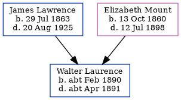

Walter Charles Laurence cFeb 1890 - c1891
[ Home ] | [ Calendar ] | [ Surnames Index ] | [ Census Index ] | [ Family History ]The child of James Lawrence (an agricultural laborer) and Elizabeth Mount (a domestic servant), Walter Laurence, the great-uncle of Nigel Horne, was born in Ramsgate, Kent, England c. Feb 18901,2 and baptized in St Lawrence, Thanet, Kent, England on Feb 2, 1890. On Apr 5, 1891, he was living at 10 Claremont Gardens in Ramsgate3.
He died c. Apr 1891 in Thanet, Kent, England2.
Parents
- James was born on Jul 29, 1863
- Elizabeth Ann was born on Oct 13, 1860
Citations
- 1891 England Census Online publication - Provo, UT, USA: The Generations Network, Inc., 2005.Original data - Census Returns of England and Wales, 1891. Kew, Surrey, England: The National Archives of the UK (TNA): Public Record Office (PRO), 1891. Data imaged from The National
- England & Wales, FreeBMD Death Index: 1837-1915 Online publication - Provo, UT, USA: The Generations Network, Inc., 2006.Original data - General Register Office. England and Wales Civil Registration Indexes. London, England: General Register Office. © Crown copyright. Published by permission of the Cont
- 1891 England, Wales & Scotland Census - Findmypast (was age 1 and the son of the head of the household)
Family Tree
Generated by ged2site. Last updated on Jun 11, 2024